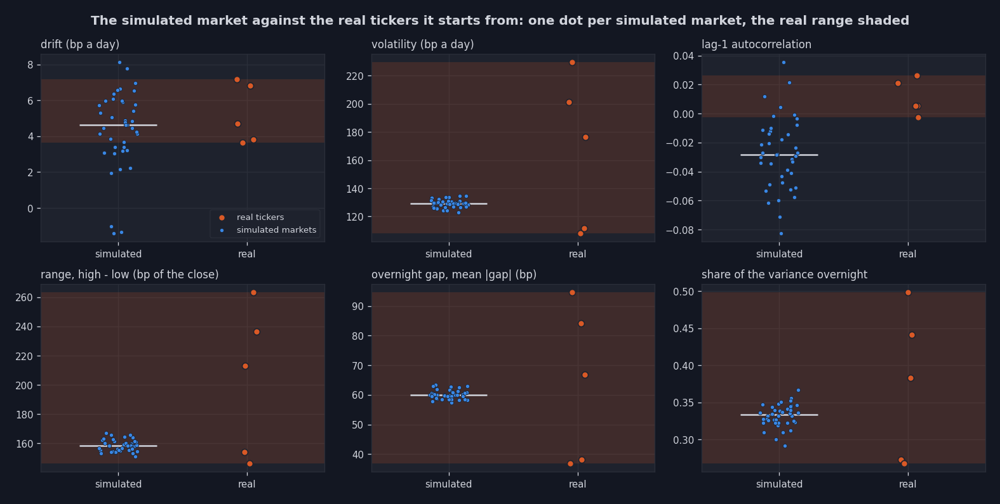
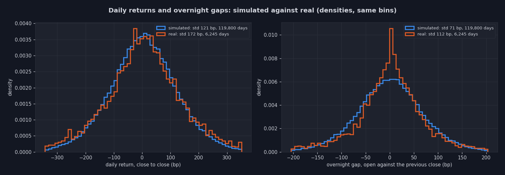
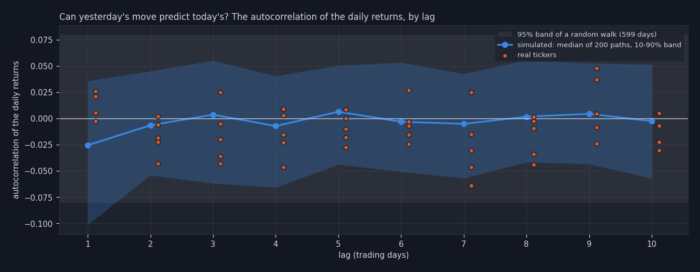

40 simulated markets of Src_RL_Trading/RL_Agents/sim_days/real5_d600 (200 symbol paths) against the real daily history of AAPL, AMZN, BRK-B, GOOG, JNJ (their last 1250 days, Data/Datasets/processed/all_prices.csv).
Each statistic of README section 2: every simulated market a blue dot (the median over its symbols), the white line their median, each real ticker an orange dot, the real range shaded.

The daily returns and the overnight gaps, simulated and real, as densities on the same bins.

A random walk stays inside the grey band; the value investors pull the price back toward the hidden value, a slight reversion.
